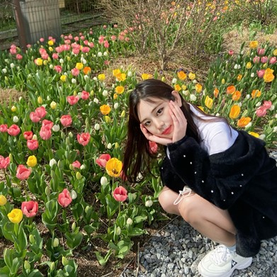
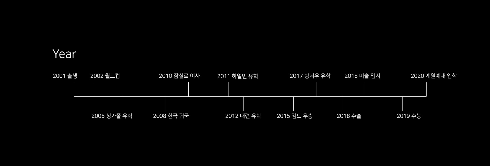

윤주율은 2001년 4월 17일에 막내딸로 태어났다. 지금은 2021년 기준 21살이고,
57cm였던 키가 167cm까지 컸다. 특기는 검도와 영어, 중국어이고 취미는 웹툰과
영화를 보는 것이다. 추억의 드라마를 보는 것도 좋아한다. 성격은 털털한 편이고
솔직하며 사람과 교류하는 것을 좋아한다. 요즘 유행하는 mbti는 ENTP/ENTJ이다.
-
- 이름
윤주율이라는 이름은 아빠가 직접 지으신 이름이다.
기둥 주 柱, 법 율 律 자를 쓰며, 법의 기둥이 되라는 의미를 가진다.
하지만 원주율과 비슷해 어렸을 적부터 별명이 원주율 파이였다.
-
- ENTP/ENTJ
리더 / 토론가 형인데, 외향적이고 나무보다 숲을 보는 경향,
감정적이기 보다는 이성적인 면, 그리고 즉흥적이면서도 계획적인 성향이
담겨있다. 우리나라 여자 중에 흔한 성격은 아니라고 한다.
-
- 검도
초등학교 2학년때부터 약 10년간 꾸준히 한 운동인 검도.
학생 때 딸 수 있는 가장 높은 단인 2단을 고등학생때 취득했고
송파구청장기대회와 서울시대회에서 각각 금메달, 동메달을 딴 전적이 있다.
-
- 외국어 능력
어렸을 적부터 유학을 자주 다닌 나는 자연스럽게 영어와 중국어를 익혔고
어린시절에 배웠기 때문에 그 감이 떨어지지 않도록 틈틈히 방학 때마다
외국에 어학연수를 가서 공부를 했다. 언어 자격증 공부도 하고있다.
